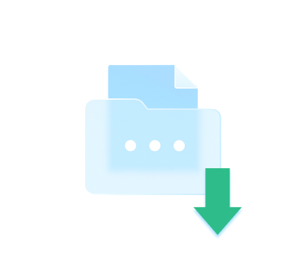

Neograničen pristup najboljim časopisima
Pošalji KIO na 1553
Usluga košta 696 RSD
Pošalji5,18 € (koos käibemaksuga)
TheKiosk je digitalna usluga koja pruža pristup širokom izboru premium časopisa, članaka i zabavnog sadržaja. Ovo je jednokratna usluga. Pošaljite KIO na 1553. Pružalac usluge: Playwing LTD. Usluga košta 696 RSD, sa uračunatim PDV-om, plus cena osnovnog SMS-a: Telekom 3,60 RSD, Yettel 3,99 RSD, A1 Srbija 3,48 RSD, dok je Globaltel besplatan. Kontakt podrška: heets.rs@silverlines.info, telefon: +381 11 321 6815. Tehnički pružalac usluge: NTH Media d.o.o. Beograd.